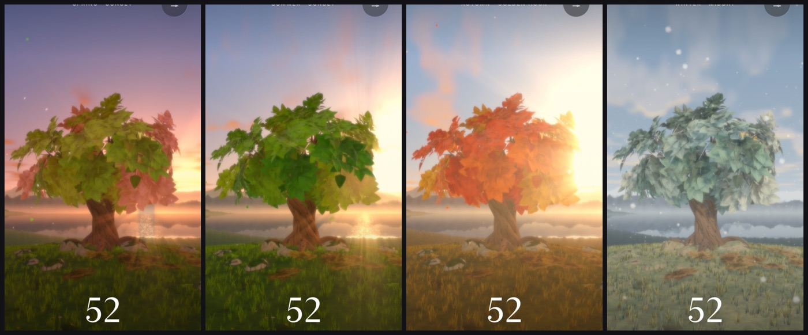

Lifetree grows your life as a 3D tree on a quiet hill above a lake. The years you have lived rest on the ground, the years ahead stay on the branches, and this year's leaf glows. Seasons, light, sky and weather follow your real calendar and clock.

Contact
Questions, ideas, or something not working? Write to us, and include your iPhone model and iOS version if something went wrong.
Tap the settings button at the top right. The tree changes as soon as you do.
Can I see my tree in another season, or at night?
In settings, turn off Follow the real sky, then choose a season, a time of day and the weather.
The seasons don't match where I live.
Choose your hemisphere in settings. Lifetree guesses it from your iPhone's region.
How do I change the language?
In settings, choose Language. Lifetree speaks English and Vietnamese, and follows your iPhone unless you choose one.
How do I start again?
In settings, tap Start over. Your answers are removed from your iPhone.
Privacy
Lifetree collects no data. Your answers never leave your iPhone. Read the privacy policy.
Mỗi chiếc lá là một năm.
Lifetree trồng cuộc đời bạn thành một cái cây 3D trên ngọn đồi yên tĩnh bên hồ. Những năm bạn đã sống nằm dưới đất, những năm phía trước vẫn ở trên cành và chiếc lá của năm nay tỏa sáng. Mùa, ánh sáng, bầu trời và thời tiết theo lịch và đồng hồ của bạn.
Liên hệ
Bạn có câu hỏi, góp ý hoặc gặp lỗi? Hãy viết cho chúng tôi. Nếu gặp lỗi, bạn nhớ ghi kèm dòng iPhone và phiên bản iOS đang dùng.